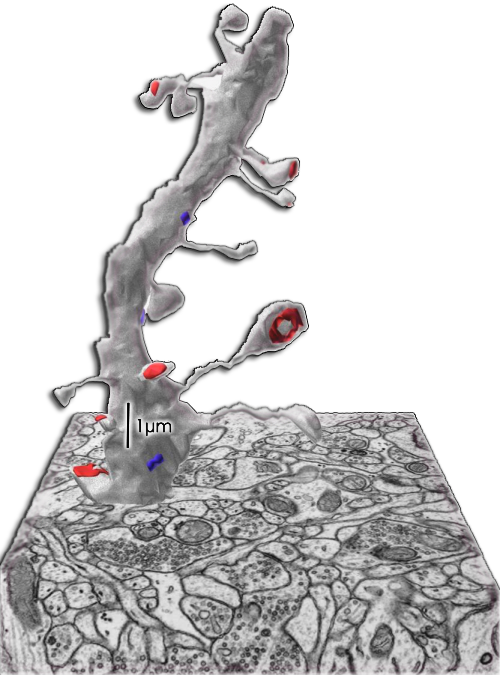
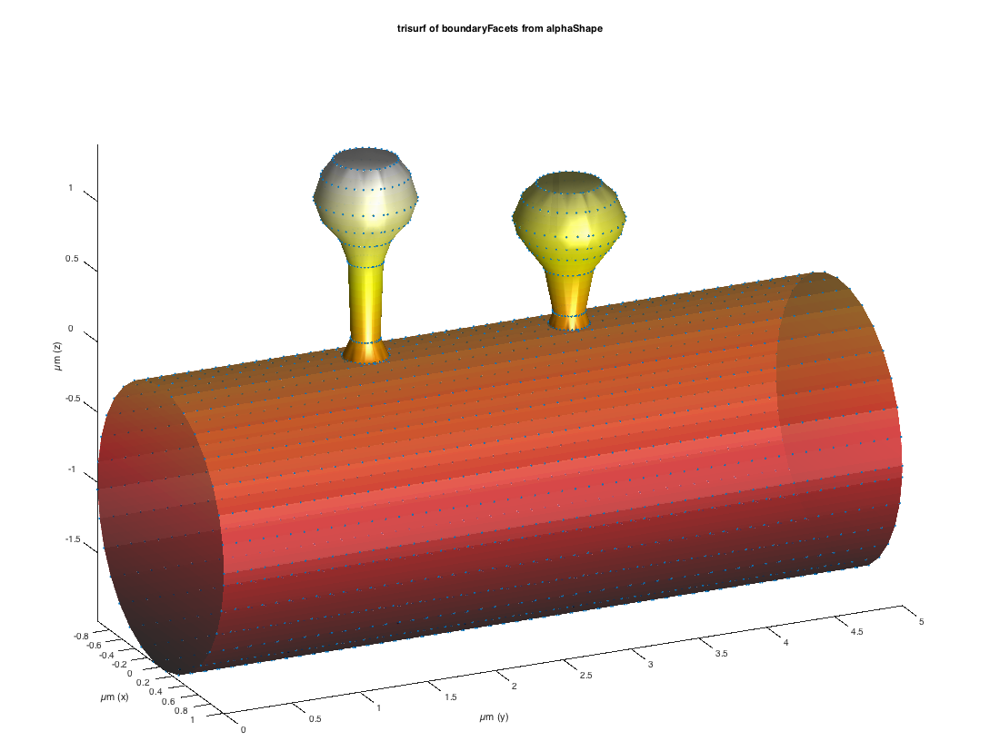
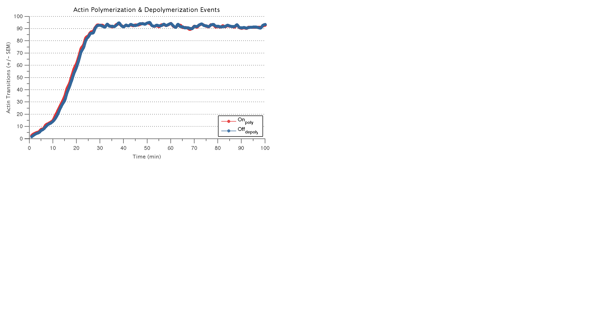
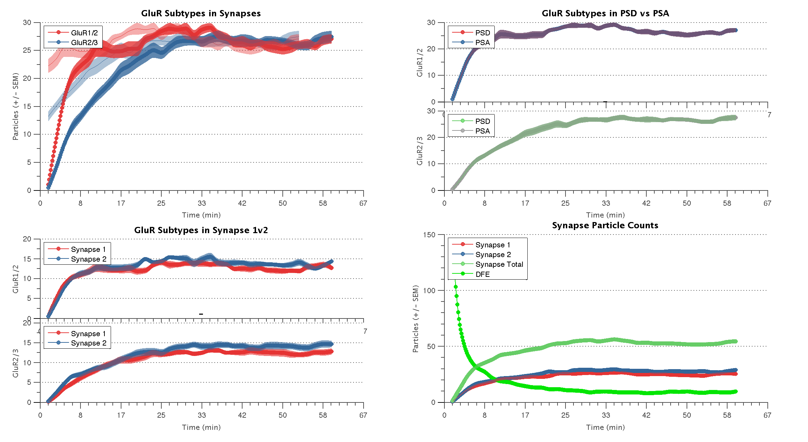

Project Overview
What is Plasticity?
Plasticity is a research codebase for simulating the molecular and biophysical events underlying synaptic plasticity in neurons. It integrates stochastic models of AMPA-receptor (AMPAR) trafficking, actin/scaffold dynamics, and surface diffusion on realistic dendritic meshes to explain how synapses strengthen or weaken in response to activity.
Key Capabilities
- Multiplex ODEs for receptor, actin, and scaffold state transitions
- Mesh-based particle diffusion on dendritic-spine surfaces
- Interactive MATLAB GUIs (STARShiP, ActinMultiplex)
- Python/Cython extension for high-performance diffusion stepping
- FEniCS/DOLFIN XML mesh import pipeline
- MSD analysis, alpha-shape surfaces, trajectory tracking
Model Components
AMPAR Trafficking — STARShiP
Stochastic simulation of AMPA-receptor insertion, removal, and lateral mobility at the postsynaptic density. Implemented in STARShiP.m with an interactive GUI (STARShiPGUI.m).
Actin & Scaffold Dynamics
Multiplex ODE network (ActinMultiplex.m) models actin polymerization and depolymerization coupled to scaffold protein state, driving spine morphology changes.
Dendritic-Surface Diffusion
Triangulated mesh representation of dendritic surfaces with particle random-walk diffusion via DendriteMeshDiffusion.m and a Cython MEX-style extension.
Mesh Import Pipeline
DOLFIN/FEniCS XML meshes are parsed by dolfinXML.m, triangulated with TriMeshBuilder.m, and passed to MATLAB or Python solvers.
Python / Cython Extension
PyDiffusion/advance_one_step_mex/ provides a compiled Cython module (_cython_interface.pyx) exposing a fast per-step diffusion kernel callable from Python and MATLAB.
Analysis & Visualization
MSD analyzer, robust alpha-shape surface fitting, trajectory tracking (TRACKDOT.m), spine-exit detection, and publication-quality figure export routines.
Visuals




Tools & Tech Stack
Repository Structure
| Path | Description |
|---|---|
| MATmodel/mainfunctions/ | Core MATLAB scripts — STARShiP, ActinMultiplex solvers & GUIs |
| MATmodel/matpydiffusion/ | MATLAB wrappers for the Python diffusion kernel and DOLFIN mesh import |
| MATmodel/MatlabMeshDiffusion/ | Pure-MATLAB triangular mesh diffusion solver |
| MATmodel/mainfigures/ | Reference figures & GUI layout files (.fig) |
| MATmodel/outputfigs/ | Simulation output figures (STARShiP runs) |
| MATmodel/miscfunctions/ | Utility toolbox — MSD analyzer, actin ORM, Izhikevich model, etc. |
| PyDiffusion/advance_one_step_mex/ | Cython/C extension for fast diffusion stepping, with Makefile |
Links & Resources
🔗 GitHub Repository
Browse source code, open issues, or fork the project.
📦 Get Started
- Clone:
git clone https://github.com/bradmonk/plasticity.git - Open
MATmodel/mainfunctions/STARShiP.min MATLAB - Build extension:
cd PyDiffusion/advance_one_step_mex && make